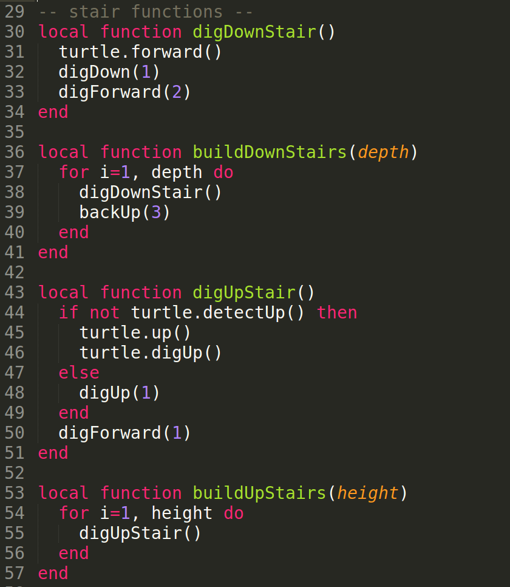

Turtle Maze
Lua Programming Concepts
Variables
- Variables store a changeable value
- Meaningful variable names make code easier to read
Lua Programming Concepts (Cont.)
Functions
- Functions help simplify code, separating it by functionality and reducing repetitiveness.
- Meaningful function names make code easier to read
Lua Programming Concepts (Cont.)
Conditional ( If, Then, Else )
- If the condition is met then the block of code will run
- If the condition is not met then the else block of code will run
- If no else block in the condition and the condition is not met then the block of code in the condition will not run
Lua Programming Concepts (Cont.)
For Loop
for Variable = Start, End, Interval do --Code to be looped over end
- Variable = Number that will track where we are in the loop. Typically called 'i' or something appropriate to the script
- Start = The number to indicate the start point for the loop. Typically will start at '1'
- End = Then number the loop will count to. How many times the loop will be run.
- Interval = An optional argument that will specify how much to increment
Lua Programming Concepts (Cont.)
While Loop
- The While loop will continue looping until a certain condition is no longer met.
Modulo (%)
- An operator that finds the remainder of division of one number by another
- Examples: 6 % 5 = 1, 7 % 5 = 2, 8 % 5 = 3, 10 % 5 = 0, 11 % 5 = 1
Lua Programming Concepts (Cont.)
math.random
- Math function that randomly picks a random number between the two provided numbers
- Example: math.random(5,10) will randomly select either 5,6,7,8,9, or 10.
math.floor
- Math function that drops the decimal and just provides the largest integer that is less than the original value.
- Examples: math.floor(2.6) = 2, math.floor(2.5) = 2
Insert Disk To Save Code Before Starting!
Start coding!
- Make sure you are creating the file in the disk directory!
- If you want to edit from a better editor like textmate or note pad. Then see appendix for details
Maze Code
Utility Functions
Stair Functions
Maze Functions
Main Code
Run Code To Create Maze
- Copy code from the disk to the turtle
- Change directory outside the disk to the copied code
- Put 64 glowstones in the last slot as shown
- Type the name of the file to run the code
Note: If turtle does not run you need to set turtle needs fuel flag to false or refuel the turtle.
Resources
- My email: joe.dean@gmail.com
- My Twitter: @joeddean
- Code: https://github.com/joedean/computercraft/blob/master/maze/maze.lua
- Slides: http://www.simplecupofjoe.com/minecraft/maze.html
Thanks
- on-site.com: @onsitedotcom
Appendix I
Remove the need for Fueling a Turtle

Appendix II
Edit Program Outside of Minecraft

/